Negro: muros. Azul: puertas. Celeste punteado: vanos. Verde: inicio. Rojo: jefe. La raya negra gruesa de cada mueble marca su lado «trasero» (y local -).
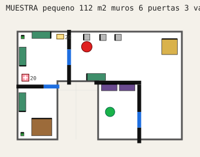
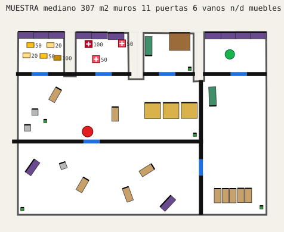
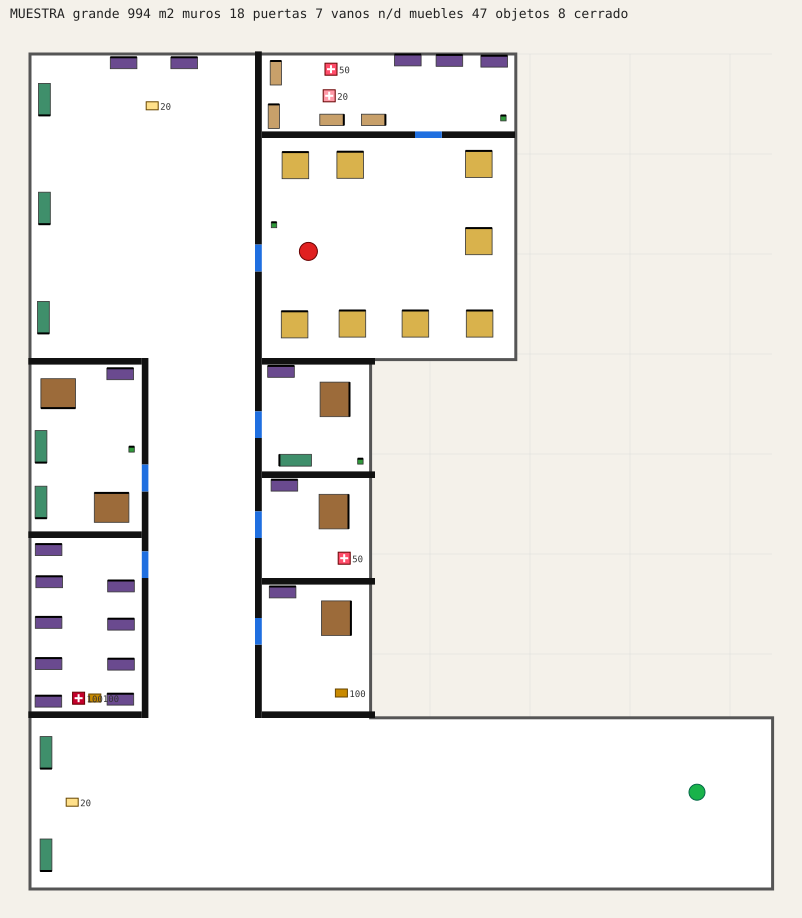
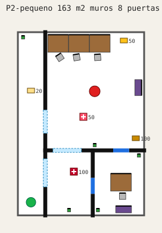
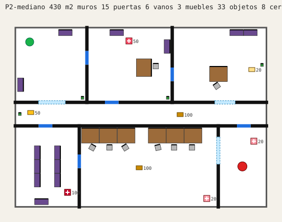
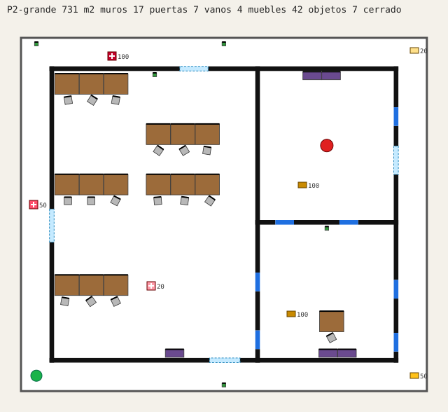
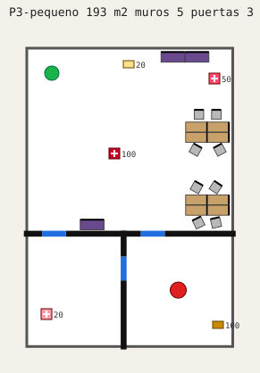
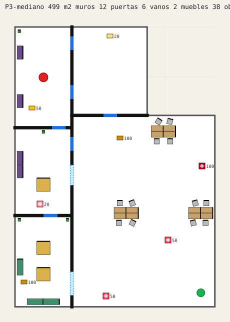
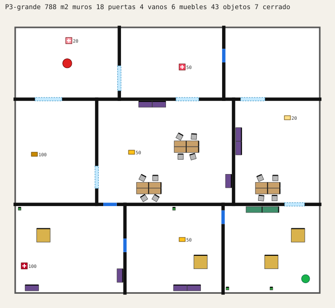
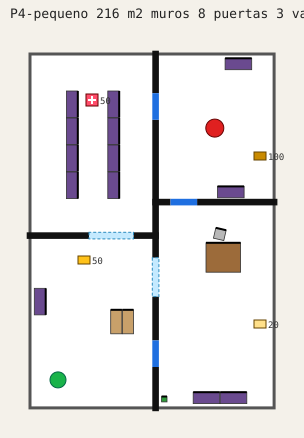
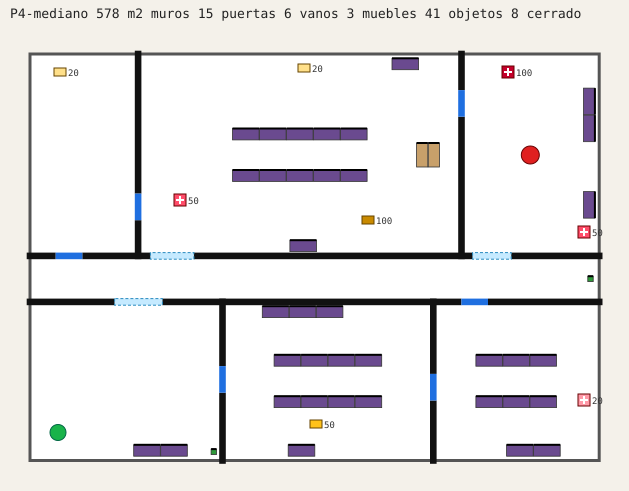
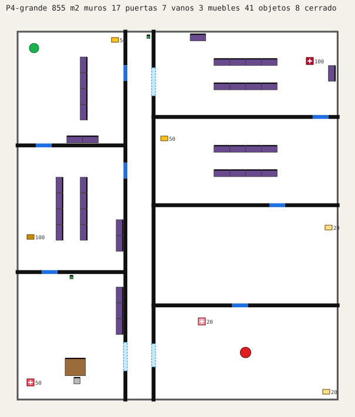
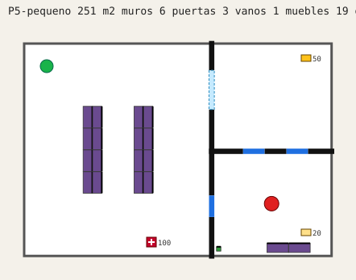
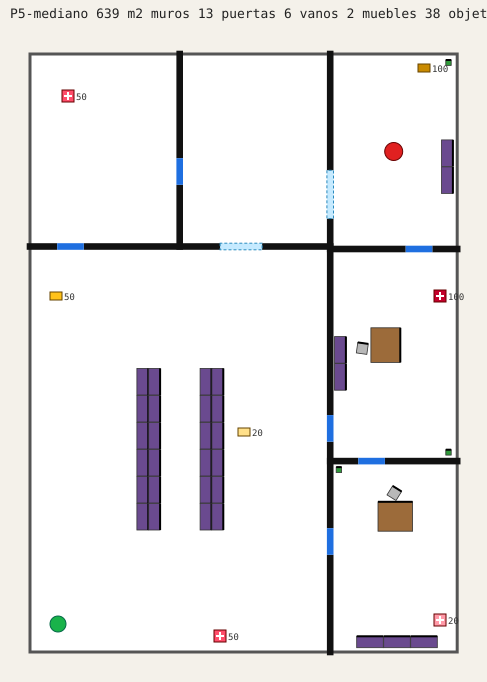
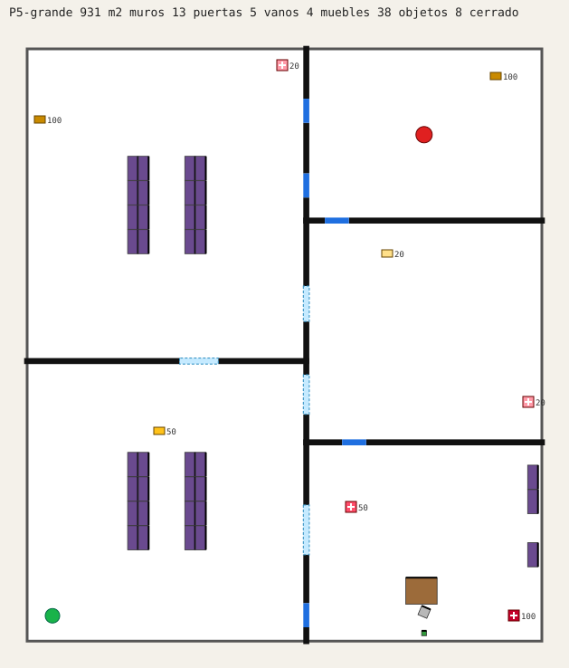
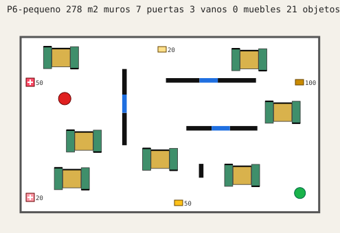
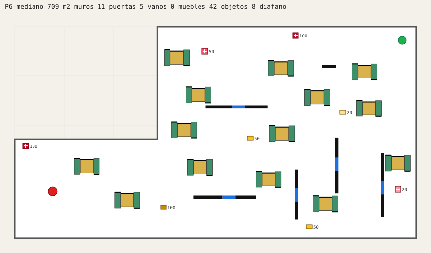
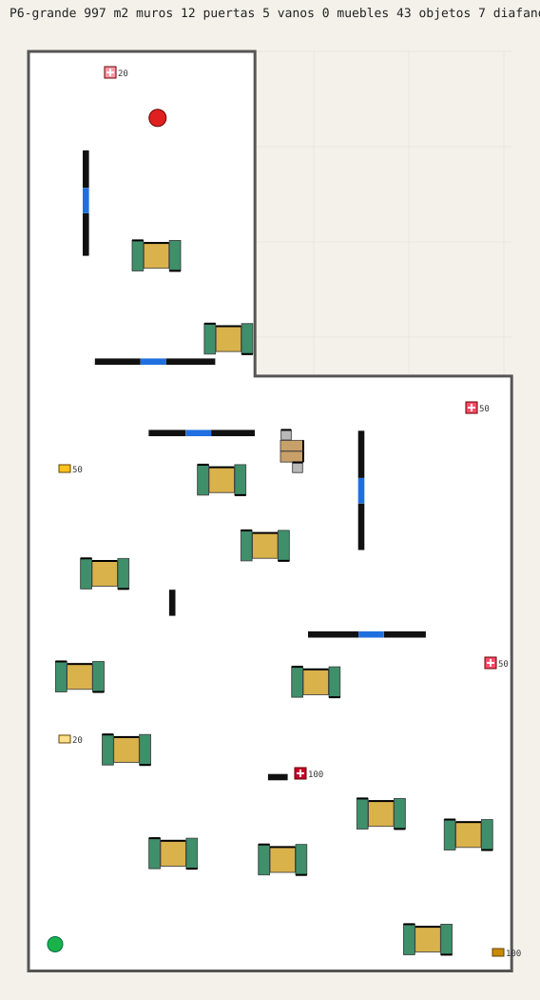
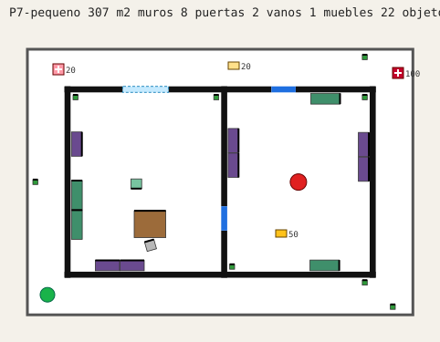
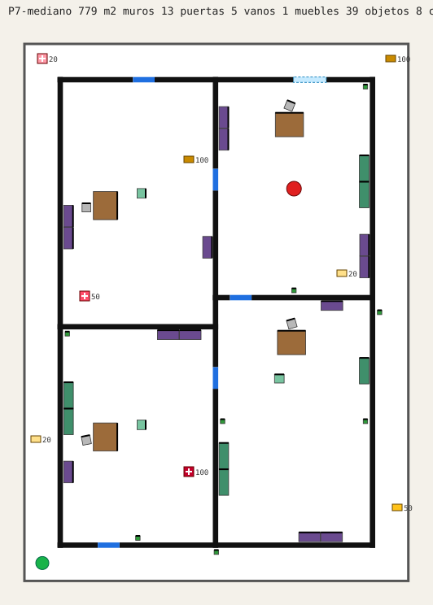
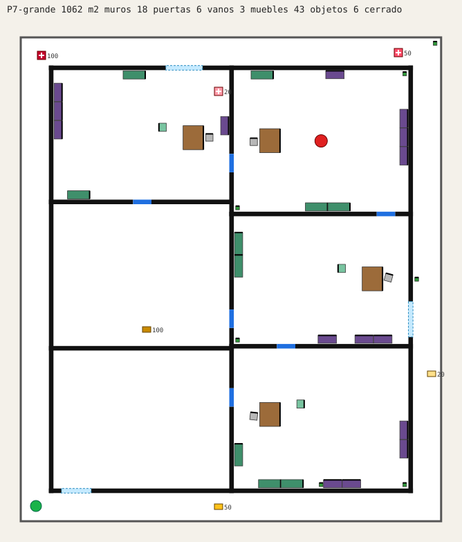
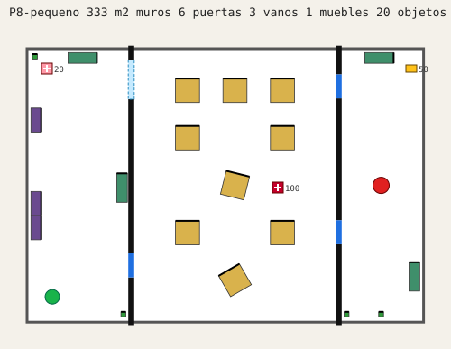
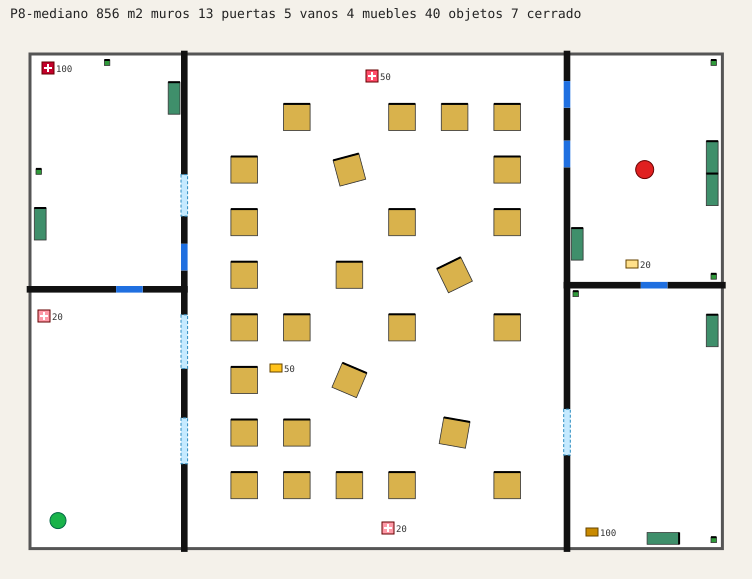
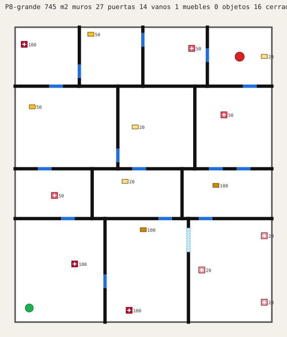
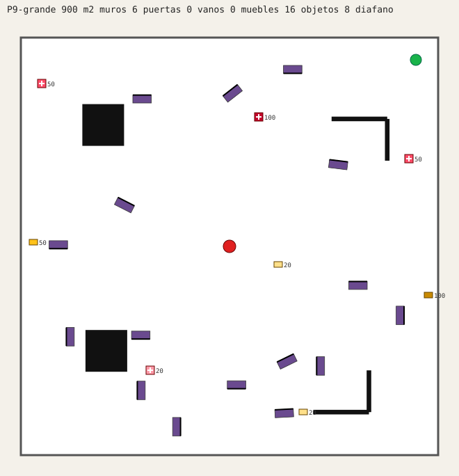
planta | tamaño | m2 | muros | puertas | vanos | muebles | objetos 2 | pequeno | 163 | 8 | 2 | 3 | 15 | 5 2 | mediano | 430 | 15 | 6 | 3 | 33 | 8 2 | grande | 731 | 17 | 7 | 4 | 42 | 7 3 | pequeno | 193 | 5 | 3 | 0 | 19 | 5 3 | mediano | 499 | 12 | 6 | 2 | 38 | 8 3 | grande | 788 | 18 | 4 | 6 | 43 | 7 4 | pequeno | 216 | 8 | 3 | 2 | 18 | 4 4 | mediano | 578 | 15 | 6 | 3 | 41 | 8 4 | grande | 855 | 17 | 7 | 3 | 41 | 8 5 | pequeno | 251 | 6 | 3 | 1 | 19 | 3 5 | mediano | 639 | 13 | 6 | 2 | 38 | 7 5 | grande | 931 | 13 | 5 | 4 | 38 | 8 6 | pequeno | 278 | 7 | 3 | 0 | 21 | 5 6 | mediano | 709 | 11 | 5 | 0 | 42 | 8 6 | grande | 997 | 12 | 5 | 0 | 43 | 7 7 | pequeno | 307 | 8 | 2 | 1 | 22 | 4 7 | mediano | 779 | 13 | 5 | 1 | 39 | 8 7 | grande | 1062 | 18 | 6 | 3 | 43 | 6 8 | pequeno | 333 | 6 | 3 | 1 | 20 | 3 8 | mediano | 856 | 13 | 5 | 4 | 40 | 7 8 | grande | 745 | 27 | 14 | 1 | 0 | 16 9 | grande | 900 | 6 | 0 | 0 | 16 | 8